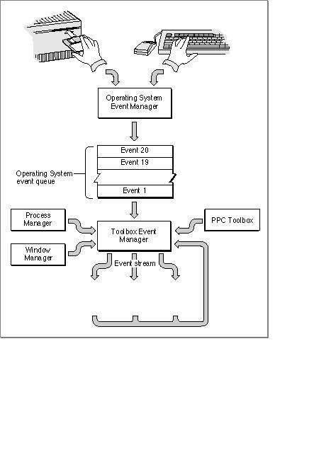

About Events
Probably the most distinctive aspect of a well-written Macintosh application is that it puts users in control of the application, not the other way around. To be in control, the user should be able to perform, at any particular time, any of a wide array of actions. These actions might include pulling down one of your application's menus, choosing a menu command, typing some characters, moving a window, and so forth. A key concept here is that users should feel that your application is always ready to do something for them.Even when your application is busy performing some lengthy operation (for instance, saving a document to disk) and you need to prevent the user from doing other things, you should provide some safe way for the user to cancel the operation and regain control. Typically you accomplish this by displaying a dialog box indicating that a lengthy operation is underway; the dialog box should indicate some safe way for the user to stop the operation.
The essence of this user-centered design is the use of an event-driven programming model. In other words, the system software breaks up the user's actions into their component events, which are passed one by one to your application for handling. For example, when the user presses a key on the keyboard, the system software sends your application information about that event. This information includes which key was pressed, when the key was pressed, whether any modifier keys (for instance, the Command key) were being held down at the time of the keypress, and so forth. Your application responds to the event by performing whatever actions are appropriate.
Your application can receive many types of events. Events are usually divided into three categories:
The Event Manager returns low-level events to your application for occurrences such as the user pressing the mouse button, releasing the mouse button, pressing a key on the keyboard, or inserting a disk. The Event Manager also returns low-level events to your application if your application needs to activate a window (that is, make changes to a window based on whether it is in front or not) or update a window (that is, redraw the window's contents). When your application requests an event and there are no other events to report, the Event Manager returns a null event.The Event Manager returns operating-system events to your application when the processing status of your application is about to change or has changed. For example, if a user brings your application to the foreground, the Process Manager sends an event through the Event Manager to your application. Some of the work of reactivating your application is done automatically, both by the Process Manager and by the Window Manager; your application must take care of any further processing needed as a result of your application being reactivated.
The Event Manager returns high-level events to your application as a result of communication directed to your application from another application or process.
Figure 4-1 illustrates the various sources of events that can be passed to your application. As you can see, events originate from a number of different sources: the Operating System Event Manager, Window Manager, Process Manager, and PPC Toolbox.
- Note
- Low-level events, except for update events and null events, are always directed to the foreground process. Operating-system events are also always directed to the foreground process. High-level events, update events, and null events can be directed to the foreground process or background processes.
Figure 4-1 Sources of events sent to your application

The Event Manager maintains, for each open application, an event stream containing those events that are available to that application. Your general strategy is to retrieve an event, process it, retrieve the next event, process it, and so on indefinitely. You stop this process only when the user elects to quit your application.